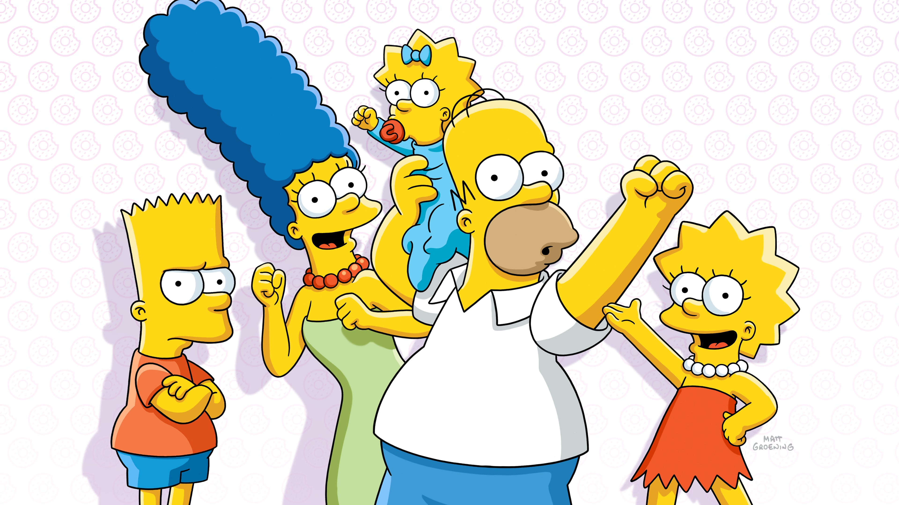
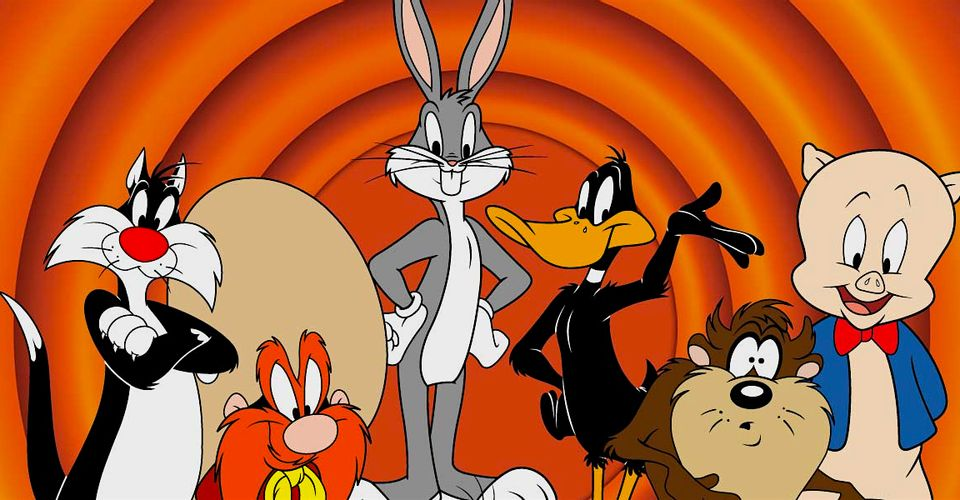
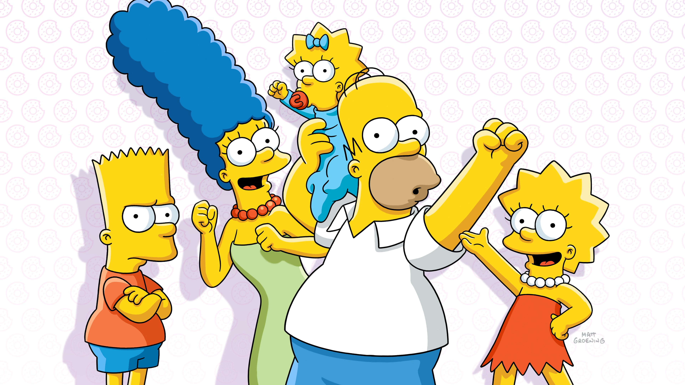
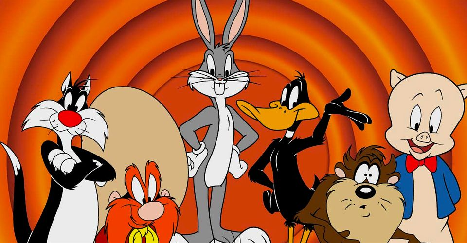

Cartoons
Deciding on a list of the best cartoons was much easier than determining the other categories. This is because I find it easier to judge the quality of cartoons especially when they are targeted at children. In this category I consider all aspects of cartoons including animation, script, plot and overall quality.

 



#1 Spongebob
Spongebob is the greatest cartoon of all time in my opinion. The first three seasons of Spongebob are very high quality. For me it checked all the boxes for a children's cartoon. It was: clever, funny, enjoyed by adults, wholesome, had morals, and did not rely on lazy techniques to get children laughing. The show goes downhill quickly after the first few seasons, but looking at the best of Spongebob, it deserves the #1 spot.
#2. Adventure Time
Adventure Time is high quality especially given the fact that more adults watch it then children. Despite being aimed at kids, Adventure Time delves into mystical plotlines and has a complicated universe that leave kids as well as adults intrigued.
#3 The Simpsons
The Simpsons Is a timeless cartoon sitcom that pioneered less idealistic and more relatable family models. Before The Simpsons, Sitcoms starred cheery families that were unrealistically portrayed as extremely loving and successfull. This show is extremely well written and critically acclaimed in addition to pushing boundaries and being extremely funny.
#4 Looney Tunes
Looney Tunes Cannot be ignored as a timeless cartoon that paved the way for a number of similar shows. Using quality, drawn animation, Looney Tunes never failed to make me laugh even without having dialogue most of the time. It takes a lot to make something so entertaining and well made that it can be enjoyed almost 100 years after being first released.
Honorable Mention: Flapjack
Flapjack is a very strange show that aired for a short period on Cartoon Network.The animation is pretty lazy, and dispite being targeted at children, it uses a lot of grotesque imagry. Although this would usually be undesireable in a cartoon, the animation is used well creating an immersive but unusual aesthetic. I think Flapjack desreves an honorable mention because it is truly a clever and somewhat meaningful show. An aloof child living with a homeless "captain" who chases outlandish dreams while laughing along the way creates wholesomness in a pure but unexpected way.